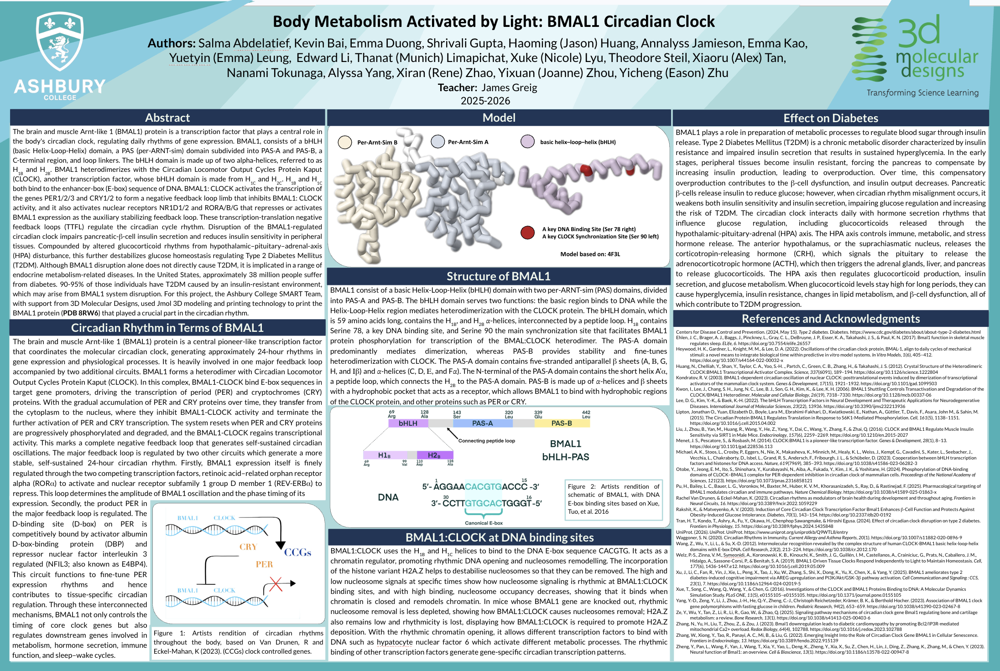
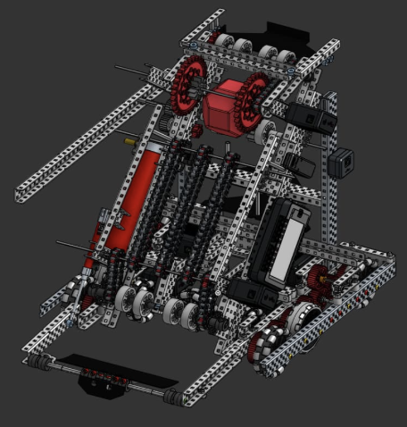
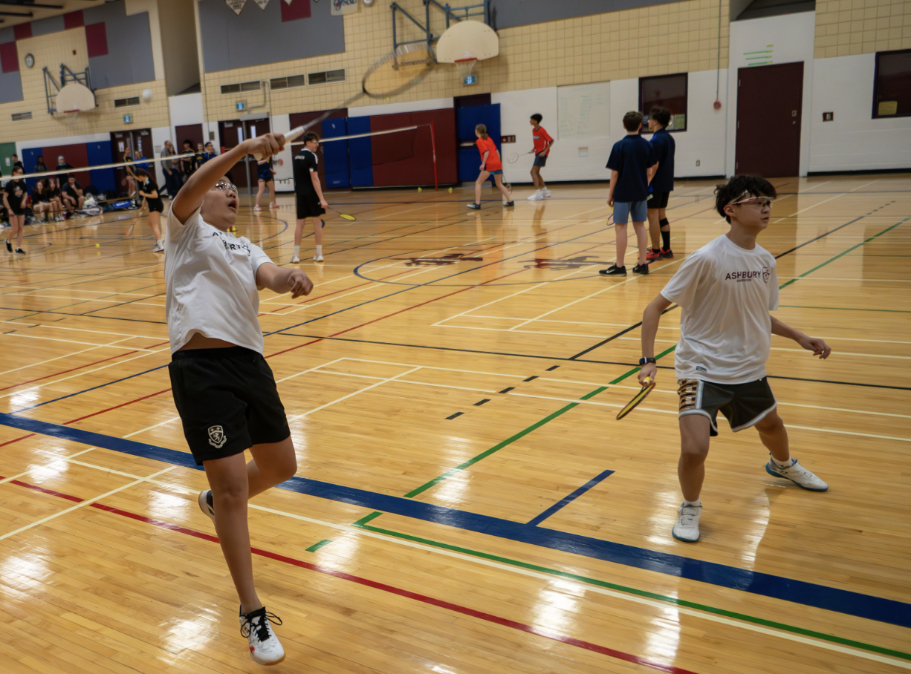
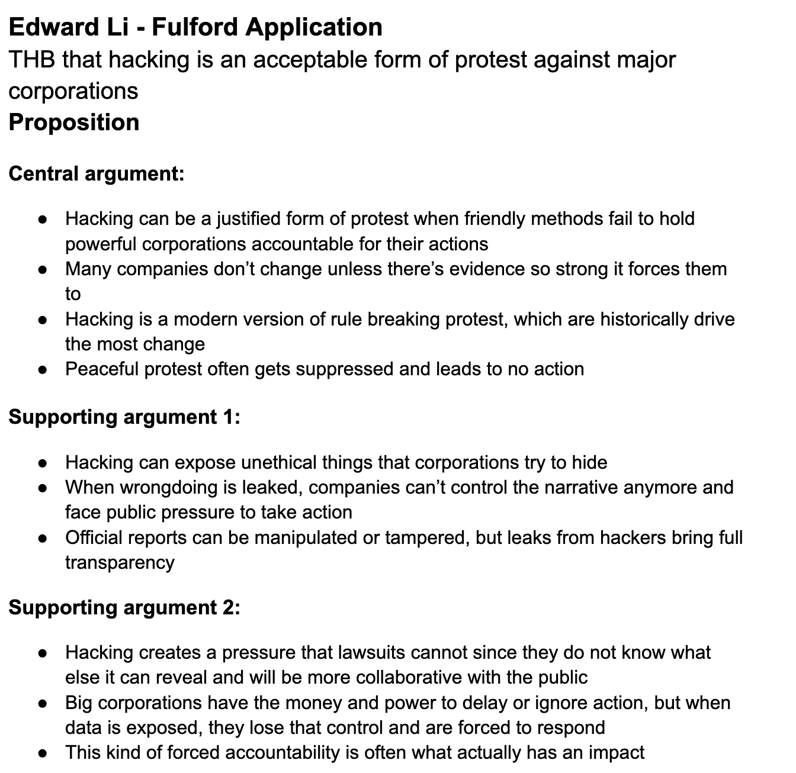
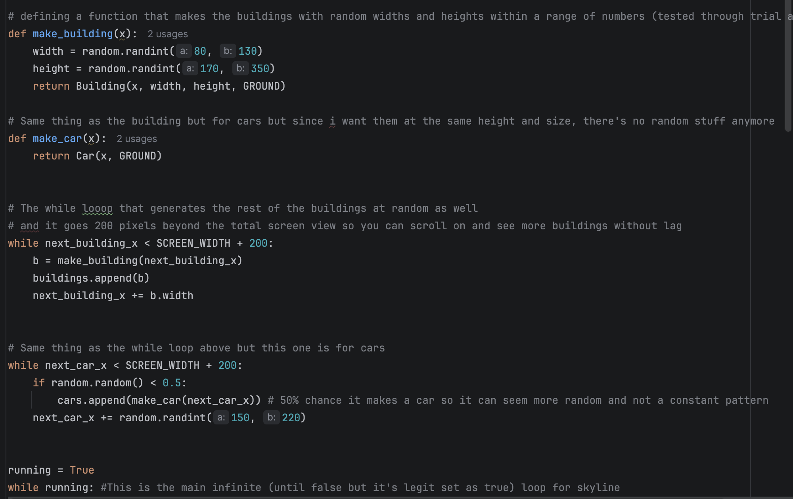

Portfolio
Here are a few of the main activities and experiences that matter most to me.

BMAL1 Research
I worked with an amazing team of students from my school to create a university-level research poster along with a 3D printed model. The whole experience was genuinely really fun, and I liked being able to present something that felt much more advanced than normal schoolwork. Above is a screenshot of our poster.

VEX Robotics
I worked with friends to build a VEX competition robot. I coded the drivetrain and also helped build different parts of the robot itself. Even though we did not end up winning competitions, it was still a super memorable experience and taught me a lot about teamwork and building under pressure.

Museum of Nature
This was basically my first real job, so I was really excited about it. I worked as an Interpreter Assistant and helped present the Pacific Discovery Tank every 45 minutes. I also helped manage lineups, control the audience, and answer questions about the creatures.

Badminton
I played competitive badminton on an HP team and represented my school at NCSSAA in boys doubles with my partner Lucas. Badminton is easily one of my favourite sports. When I play, I fully lock in, forget everything else, and just focus on the game. I also love how much quick thinking and strategy it takes.

Debate
I have been in debate club since grade 8, and it helped me improve my quick thinking, organization, and public speaking a lot. Since most debates are 3 versus 3, I also learned how to work with a team and build a smooth case under pretty insane time pressure.

Coding
Since I am literally applying for an Innovation Developer internship, I could not leave out coding. I started learning through Scratch and basic coding programs when I was younger, and now I use tools like Visual Studio Code and PyCharm to build actual projects. I do not love debugging, but I really enjoy creating something from scratch and getting it to finally work.